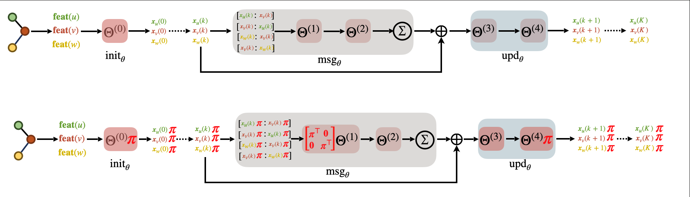

Abstract
We discover a probabilistic symmetry, called exchangeability, in graph neural networks (GNNs). Specifically, we show that the trained node embeddings computed using a large family of graph neural networks, learned under standard optimization tools, are exchangeable random variables. This implies that the probability density of the node embeddings remains invariant with respect to a permutation applied on their dimension axis. This results in identical distribution across the elements of the graph representations. Such a property enables approximation of transportation-based graph similarities by Euclidean similarities between the sorted embedding elements in fixed dimension. This allows us to propose a unified locality-sensitive hashing (LSH) framework that supports diverse relevance measures for graphs. Experiments show that our method provides more effective LSH than baselines.
The Graph Retrieval Problem
Finding the most similar graphs in a large corpus is a fundamental problem in cheminformatics, social network analysis, and program analysis. Recent work has shown that transportation-based similarities—which compute optimal alignments between node embeddings of two graphs—significantly outperform simpler aggregation methods and graph kernels. However, these distances are expensive: exact computation scales as O(n³) for graphs with n nodes, and even approximations like Sinkhorn iterations require O(n²) per comparison. When searching a corpus of millions of graphs, these costs become prohibitive.
Exchangeability in GNN Embeddings
We discover a surprising property: trained GNN embeddings are exchangeable random variables along their dimension axis. If a GNN produces a D-dimensional embedding for each node, the individual dimension values are identically distributed—their joint probability density is invariant under any permutation of the dimensions. This property emerges naturally from standard training (SGD, Adam) across a wide family of GNN architectures, without any explicit architectural constraints.
The figure below shows this empirically: the probability density of individual embedding dimensions across nodes converges to the same distribution as training progresses.

Figure 1. Empirical probability density of GNN embedding dimensions on the COX2 dataset across training epochs, demonstrating convergence to exchangeability.
From Transportation to Sorting
Exchangeability unlocks an elegant computational shortcut. Since all embedding dimensions are identically distributed, each dimension provides a concentrated estimate of the underlying transportation-based similarity. Rather than solving the full high-dimensional transportation problem, we can:
- Extract embeddings for each dimension separately
- Sort the values within each dimension across all nodes
- Compute per-dimension Euclidean distances between sorted vectors
- Aggregate these D simple distance estimates
This reduces the O(n³) transportation problem to D independent O(n log n) sorting problems—far more amenable to indexing.

Figure 2. Overview of the GHash framework. Exchangeability enables sorting-based approximation of transportation distances, which are then hashed using a unified LSH scheme.
With Euclidean similarities now in play, standard locality-sensitive hashing (LSH) becomes applicable. We project sorted embedding vectors into Fourier space, hash each dimension independently, and aggregate across dimension-specific hash tables for retrieval. This is the first principled LSH approach that supports asymmetric transportation-based similarities, including subgraph isomorphism and graph edit distance with non-uniform costs.
Results
We evaluate on four graph datasets from TUDatasets (COX2, PTC-FM, PTC-FR, PTC-MR) with 500 query graphs and a corpus of 100,000 graphs each, measuring MAP under both subgraph matching (SM) and graph edit distance (GED) relevance. GHash consistently outperforms all baselines including FourierHashNet, Random Hyperplanes, FAISS-IVF, and DiskANN.

Figure 3. MAP vs. retrieved graphs on COX2 (Subgraph Isomorphism). GHash achieves superior retrieval accuracy.

Figure 4. MAP vs. retrieved graphs on PTC-FM (Subgraph Isomorphism).
FourierHashNet plateaus below 50% MAP on several SM tasks due to its reliance on mean-pooled representations, while symmetric methods (IVF, DiskANN) fail entirely on asymmetric relevance measures. GHash spans the full accuracy–efficiency tradeoff spectrum, making it practical for large-scale graph retrieval.

Figure 5. Ablation: effect of embedding dimension H on retrieval quality (COX2, Subgraph Isomorphism).
BibTeX
@inproceedings{nair2026exchangeability,
title={Exchangeability of {GNN} Representations with Applications to Graph Retrieval},
author={Nair, Kartik and Roy, Indradyumna and Chakrabarti, Soumen and Dasgupta, Anirban and De, Abir},
booktitle={Proceedings of the International Conference on Learning Representations (ICLR)},
year={2026}
}